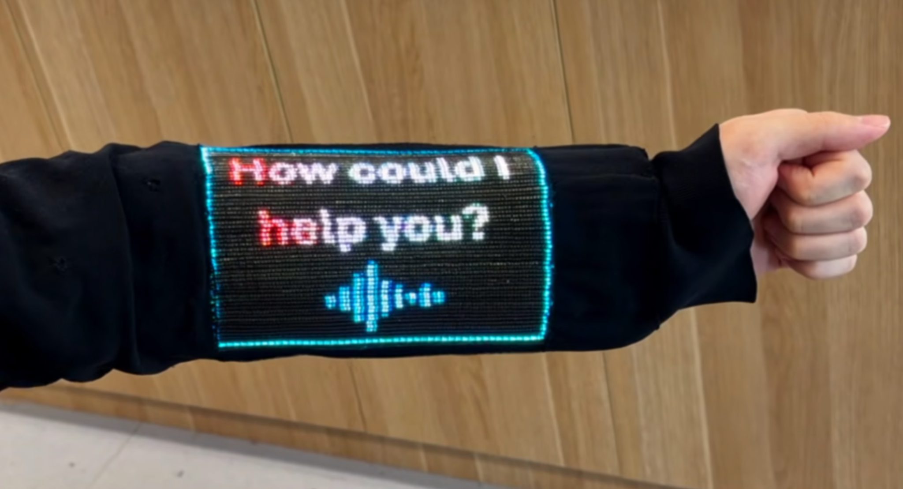
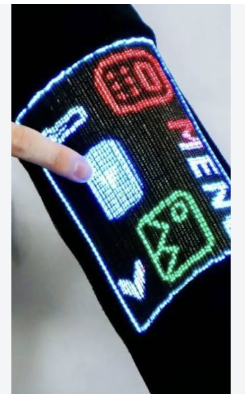

Entrada táctil
La persona puede pulsar directamente sobre la manga para dar una orden, sin utilizar ratón ni teclado en esa acción.
TECNOLOGÍA E INTERACCIÓN · 2026
Una nueva forma de utilizar la tecnología: tocar la manga de una prenda para interactuar con información digital.
En octubre de 2026 se dio a conocer una pantalla táctil integrada en una prenda de vestir, desarrollada por investigadores de la Universidad Nacional de Singapur (NUS). El estudio se publicó el 21 de octubre de 2026.
En vez de llevar una pantalla rígida en la mano, la persona puede consultar información en una zona de la manga y tocarla para interactuar. La pantalla forma parte del tejido gracias a fibras electrónicas.
Es importante señalar que todavía es un prototipo de investigación, no un producto que se pueda comprar en tiendas.


El prototipo utiliza fibras electrónicas con elementos luminosos y sensores táctiles. Estas fibras permiten mostrar imágenes y detectar las pulsaciones del usuario. Así, una misma superficie sirve para recibir órdenes y presentar resultados.
En las demostraciones se han mostrado funciones como una calculadora, una brújula, imágenes y vídeo, además de la recepción de información mediante Bluetooth.
| Característica | Descripción |
|---|---|
| Tipo | Pantalla táctil textil flexible |
| Resolución | 96 × 54 píxeles |
| Velocidad | Hasta 30 fotogramas por segundo |
| Resistencia | Pruebas de 50 lavados y 1.000 flexiones |
| Estado | Prototipo experimental |
Los resultados de laboratorio no garantizan que todas las prendas comerciales futuras tengan la misma resistencia.
La IPO estudia cómo las personas interactúan con los ordenadores y cómo conseguir que esa interacción sea comprensible, útil y sencilla. Este invento es interesante porque convierte un objeto cotidiano, la ropa, en una interfaz de entrada y salida.
La persona puede pulsar directamente sobre la manga para dar una orden, sin utilizar ratón ni teclado en esa acción.
La pantalla presenta información y puede mostrar la respuesta del sistema después de una pulsación: es una forma de retroalimentación.
La tecnología pasa de un aparato independiente a una superficie que ya llevamos puesta. Esto abre nuevas posibilidades para los dispositivos vestibles.
Para saber si es cómoda de usar habría que evaluar el tamaño de los botones, la legibilidad, los errores al tocar y su uso mientras la persona se mueve.
Idea principal: no se trata solo de ver una pantalla en la ropa, sino de poder comunicarse con el sistema informático tocando el propio tejido.
La pantalla textil no aparece de la nada. Forma parte de la evolución de las interfaces hacia dispositivos cada vez más próximos al cuerpo.
Este prototipo no ha sustituido al teléfono móvil. Su aportación es proponer una forma complementaria de interacción que evita tener que sacar otro dispositivo para determinadas consultas.
He elegido este dispositivo porque muestra una manera diferente de relacionarnos con los ordenadores. Me parece interesante que algo tan habitual como una manga pueda utilizarse para consultar información y realizar acciones.
Entre sus posibles ventajas está consultar avisos sin sujetar una pantalla rígida. Sin embargo, su baja resolución limita la cantidad de información que se puede mostrar, y todavía es necesario estudiar su comodidad, precisión y autonomía en el uso cotidiano.
Por eso considero que su principal valor para la IPO es explorar nuevas formas de interacción, más que reemplazar los dispositivos actuales.
Para conocer más detalles sobre el invento, se pueden consultar las siguientes publicaciones:
Fotografías aportadas para este trabajo a partir de imágenes divulgativas del prototipo.